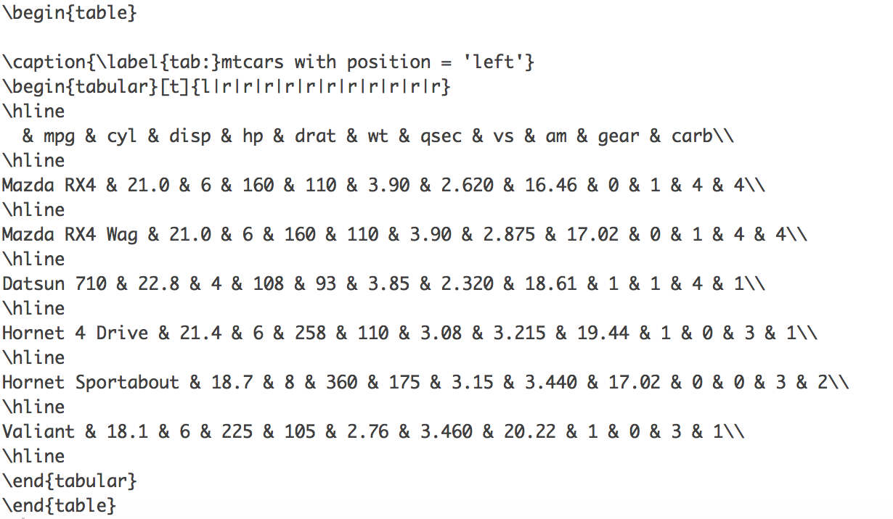
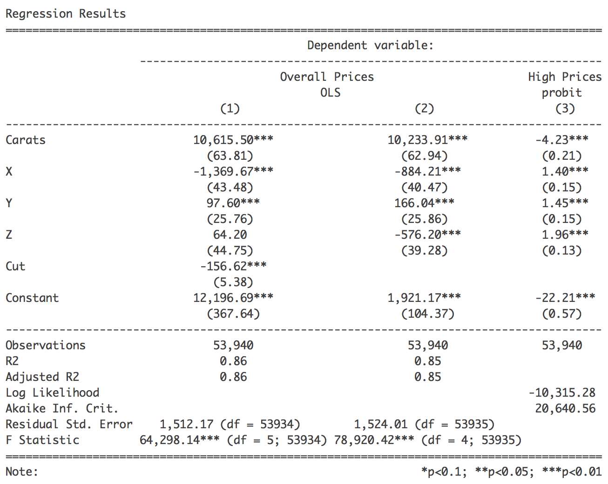
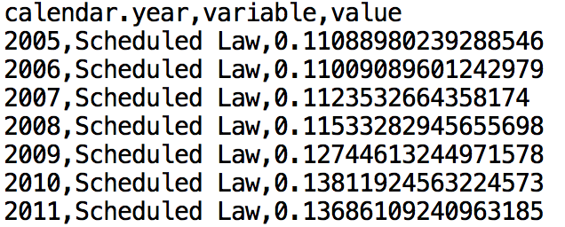
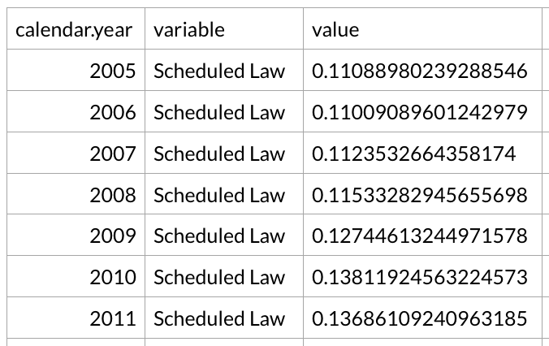

Urban Institute R Table Guide
R is a powerful programming language for statistics, plotting, and analysis. An abundance of books and online training materials are available for R, but most overlook building programmatic and reproducible tables. This guide aims to outline the strengths and weaknesses of tools for creating tables in R.
If you have any questions about building tables in R, or more generally using R, please don’t hesitate to reach out to Aaron Williams (awilliams@urban.org).
Note: It is important to communicate with the Urban Institute COMMS department about publications. Presence in this document is not a guarantee that the tools or styles are ready for an Urban Institute publication.
Getting started
There are two important steps to building a useful table in R:
- Get the data frame into the correct shape.
- Decide on the output format.
The section “Tidy Data” addresses the first step by outlining library(broom) and library(dplyr). Both are powerful tools whose use extends beyond making tables.
The rest of this document is dedicated to outlining the strengths, weaknesses, uses, and methods of different tools for building tables in R. The following subsections link output formats to tools:
R Markdown
todo(aaron): add image
R Markdown is one of the most powerful parts of R. It combines “text chunks”, “code chunks”, and “output chunks” to create a range of documents including .PDF, .html, Microsoft Word, websites, books, and more (this guide was built using R Markdown!). It is best for creating entire documents instead of pieces of larger documents.
Most of the tools in this document are optimized for creating tables using R Markdown. This is fortunate if R Markdown is the tool of choice for a publication and unfortunate if R is just one piece of a heterogeneous workflow.
html
This guide is an html document. Any table in this document can be easily replicated as-is in .html. kable(), library(kableExtra), library(formattable), and library(stargazer) are the best tools for .html documents.
Here’s an example .html table:
library(formattable)
library(kableExtra)
diamonds %>%
top_n(5, price) %>%
arrange(desc(price)) %>%
select(Carat = carat, Cut = cut, Price = price) %>%
mutate(Price = currency(Price, digits = 0)) %>%
kable(caption = "Top Diamond Prices", align = "r", format = "html") %>%
kable_styling(full_width = FALSE, position = "left") %>%
add_footnote("Urban Institute analysis of diamond data", notation = "alphabet")| Carat | Cut | Price |
|---|---|---|
| 2.29 | Premium | $18,823 |
| 2.00 | Very Good | $18,818 |
| 1.51 | Ideal | $18,806 |
| 2.07 | Ideal | $18,804 |
| 2.00 | Very Good | $18,803 |
| a Urban Institute analysis of diamond data |
R Markdown is great for “knitting” straight to PDF. Many of the tables in this document can be “knitted” to PDF with little to no change to the code but the output will look a little different than .html. kable(), library(kableExtra), library(formattable), and library(stargazer) are the best tools for PDFs.
Here’s a great example of a PDF table by Bhargavi Ganesh (HFPC):
todo(aaron): update Bhargavi example
LaTeX
LaTeX (pronounced “lay-tech”) is a syntax/micro-language for typesetting technical and scientific documents. kable(), library(kableExtra), and library(stargazer) can all write to LaTeX which can then be implemented elsewhere.
Here’s an example of raw LaTeX output by kable():

Text
library(stargazer) is the only real option for printing ASCII tables.

Microsoft Word
The appealing but dense formatting of the Urban Institute’s Microsoft Word template makes it effectively impossible right now to “knit” or write straight to Microsoft Word for publications. R Markdown and library(WordR) can both “knit” or write straight to Microsoft Word documents.
Microsoft Excel
R tools for interacting with Microsoft Excel have never been more powerful. library(readr), library(writexl), and library(openxlsx) can write to .csv, .xls, .xlsx without formats, and .xlsx with formats. All three tools are outlined under “Export to Excel”.
If Excel is necessary, programmatically write the data to one sheet in a workbook and then use cell references to build Urban Institute-compliant tables in another sheet. This way, the data can be updated without deleting the tables or formatting.
An early table in “A Discours of the Variation of the Cumpas, or Magneticall Needle” by William Borough (1581)
kable()
The kable() function from library(knitr) is the simplest way to build tables in R Markdown.
kable()’s tables are ugly in the R console, but their default is appealing in R Markdown. Add css: styles.css to the R Markdown YAML header before using kable() so styles and fonts are Urban Institute compliant.
---
output:
html_document:
css: styles.css
---mtcars_subset <- mtcars %>%
rownames_to_column(var = "Model") %>%
select(Model, MPG = mpg, Cylinders = cyl, Weight = wt) %>%
arrange(-MPG) %>%
top_n(5, MPG)
mtcars_subset %>%
kable(caption = "Cars with the best fuel economy")| Model | MPG | Cylinders | Weight |
|---|---|---|---|
| Toyota Corolla | 33.9 | 4 | 1.835 |
| Fiat 128 | 32.4 | 4 | 2.200 |
| Honda Civic | 30.4 | 4 | 1.615 |
| Lotus Europa | 30.4 | 4 | 1.513 |
| Fiat X1-9 | 27.3 | 4 | 1.935 |
caption
caption = adds a title to the R Markdown table.
Titles can also be added with ##, ###, ####, etc. in R Markdown documents. This is advantageous because the table title will be added to the table of contents based on where it falls in the hierarchy of html/R Markdown headers. R Markdown table titles default to the same size as headers with ####.
#### Cars with the best fuel economy
Cars with the best fuel economy
digits
digits = controls the maximum number of digits for each number in a table.
mtcars_subset %>%
kable(digits = 0)| Model | MPG | Cylinders | Weight |
|---|---|---|---|
| Toyota Corolla | 34 | 4 | 2 |
| Fiat 128 | 32 | 4 | 2 |
| Honda Civic | 30 | 4 | 2 |
| Lotus Europa | 30 | 4 | 2 |
| Fiat X1-9 | 27 | 4 | 2 |
col.names
The first kable() example in the library(kable) subsection renamed variables with select() before making the table. This is often necessary because lower case names with underscores are more common in analyses than Urban Institute-compliant column names (sentence case).
Another option is to specify a vector of column names when using kable(). col.names = specifies a vector with which to replace column names.
mtcars_subset %>%
kable(col.names = c("Car model", "Fuel Economy", "Cylinders", "Weight (Tons)"))| Car model | Fuel Economy | Cylinders | Weight (Tons) |
|---|---|---|---|
| Toyota Corolla | 33.9 | 4 | 1.835 |
| Fiat 128 | 32.4 | 4 | 2.200 |
| Honda Civic | 30.4 | 4 | 1.615 |
| Lotus Europa | 30.4 | 4 | 1.513 |
| Fiat X1-9 | 27.3 | 4 | 1.935 |
align
align = changes the column alignment. Numeric columns are right-aligned by default and all other columns are left-aligned by default.
Options are "l", "c", and "r". Individual columns can be formatted by combining options into one character string (ex. "rlrlc").
mtcars_subset %>%
select(MPG, Cylinders, Weight, Model) %>%
kable(align = "rlrr")| MPG | Cylinders | Weight | Model |
|---|---|---|---|
| 33.9 | 4 | 1.835 | Toyota Corolla |
| 32.4 | 4 | 2.200 | Fiat 128 |
| 30.4 | 4 | 1.615 | Honda Civic |
| 30.4 | 4 | 1.513 | Lotus Europa |
| 27.3 | 4 | 1.935 | Fiat X1-9 |
additional arguments
trim = FALSEnsmall = 0Ljustify = c("left", "right", "centre", "none")width = NULLna.encode = TRUEscientific = NAbig.mark = ""
big.interval = 3Lsmall.mark = ""small.interval = 5Ldecimal.mark = getOption("OutDec")zero.print = NULLdrop0trailing = FALSE, ...)
library(kableExtra)
library(kableExtra) extends the power and customization of library(kable).
This article outlines many of the following capabilities.
full_width
“kables” stretch to the full width of a document by default. full_width = FALSE turns off this default.
library(kableExtra)
kable(x = head(mtcars), format = "html") %>%
kable_styling(full_width = FALSE)| mpg | cyl | disp | hp | drat | wt | qsec | vs | am | gear | carb | |
|---|---|---|---|---|---|---|---|---|---|---|---|
| Mazda RX4 | 21.0 | 6 | 160 | 110 | 3.90 | 2.620 | 16.46 | 0 | 1 | 4 | 4 |
| Mazda RX4 Wag | 21.0 | 6 | 160 | 110 | 3.90 | 2.875 | 17.02 | 0 | 1 | 4 | 4 |
| Datsun 710 | 22.8 | 4 | 108 | 93 | 3.85 | 2.320 | 18.61 | 1 | 1 | 4 | 1 |
| Hornet 4 Drive | 21.4 | 6 | 258 | 110 | 3.08 | 3.215 | 19.44 | 1 | 0 | 3 | 1 |
| Hornet Sportabout | 18.7 | 8 | 360 | 175 | 3.15 | 3.440 | 17.02 | 0 | 0 | 3 | 2 |
| Valiant | 18.1 | 6 | 225 | 105 | 2.76 | 3.460 | 20.22 | 1 | 0 | 3 | 1 |
position
Using full_width = F opens up the possibility of changing the alignment of the table on the page.
For example, position = "left"
kable(x = head(mtcars), format = "html", caption = "mtcars with position = 'left'") %>%
kable_styling(full_width = FALSE, position = "left")| mpg | cyl | disp | hp | drat | wt | qsec | vs | am | gear | carb | |
|---|---|---|---|---|---|---|---|---|---|---|---|
| Mazda RX4 | 21.0 | 6 | 160 | 110 | 3.90 | 2.620 | 16.46 | 0 | 1 | 4 | 4 |
| Mazda RX4 Wag | 21.0 | 6 | 160 | 110 | 3.90 | 2.875 | 17.02 | 0 | 1 | 4 | 4 |
| Datsun 710 | 22.8 | 4 | 108 | 93 | 3.85 | 2.320 | 18.61 | 1 | 1 | 4 | 1 |
| Hornet 4 Drive | 21.4 | 6 | 258 | 110 | 3.08 | 3.215 | 19.44 | 1 | 0 | 3 | 1 |
| Hornet Sportabout | 18.7 | 8 | 360 | 175 | 3.15 | 3.440 | 17.02 | 0 | 0 | 3 | 2 |
| Valiant | 18.1 | 6 | 225 | 105 | 2.76 | 3.460 | 20.22 | 1 | 0 | 3 | 1 |
mtcars with float_right
kable(x = head(mtcars), format = "html") %>%
kable_styling(full_width = FALSE, position = "float_right")| mpg | cyl | disp | hp | drat | wt | qsec | vs | am | gear | carb | |
|---|---|---|---|---|---|---|---|---|---|---|---|
| Mazda RX4 | 21.0 | 6 | 160 | 110 | 3.90 | 2.620 | 16.46 | 0 | 1 | 4 | 4 |
| Mazda RX4 Wag | 21.0 | 6 | 160 | 110 | 3.90 | 2.875 | 17.02 | 0 | 1 | 4 | 4 |
| Datsun 710 | 22.8 | 4 | 108 | 93 | 3.85 | 2.320 | 18.61 | 1 | 1 | 4 | 1 |
| Hornet 4 Drive | 21.4 | 6 | 258 | 110 | 3.08 | 3.215 | 19.44 | 1 | 0 | 3 | 1 |
| Hornet Sportabout | 18.7 | 8 | 360 | 175 | 3.15 | 3.440 | 17.02 | 0 | 0 | 3 | 2 |
| Valiant | 18.1 | 6 | 225 | 105 | 2.76 | 3.460 | 20.22 | 1 | 0 | 3 | 1 |
Body text can be set to the side of a table using float_right or float_left. The text that appears next to the table goes after the function call in R Markdown documents.
column_spec
Individual columns can be formatted with column_spec(). The arguments are width, bold, italic, monospace, color (text color), background (column color), border_left, and border_right. If the paragraph next to a table with position = "float_right" is too short, the head and text of the subsequent section will appear next to the table.
kable(x = head(mtcars), format = "html", caption = "Highlight an important column") %>%
kable_styling(full_width = FALSE) %>%
column_spec(3, background = "#1696d2")| mpg | cyl | disp | hp | drat | wt | qsec | vs | am | gear | carb | |
|---|---|---|---|---|---|---|---|---|---|---|---|
| Mazda RX4 | 21.0 | 6 | 160 | 110 | 3.90 | 2.620 | 16.46 | 0 | 1 | 4 | 4 |
| Mazda RX4 Wag | 21.0 | 6 | 160 | 110 | 3.90 | 2.875 | 17.02 | 0 | 1 | 4 | 4 |
| Datsun 710 | 22.8 | 4 | 108 | 93 | 3.85 | 2.320 | 18.61 | 1 | 1 | 4 | 1 |
| Hornet 4 Drive | 21.4 | 6 | 258 | 110 | 3.08 | 3.215 | 19.44 | 1 | 0 | 3 | 1 |
| Hornet Sportabout | 18.7 | 8 | 360 | 175 | 3.15 | 3.440 | 17.02 | 0 | 0 | 3 | 2 |
| Valiant | 18.1 | 6 | 225 | 105 | 2.76 | 3.460 | 20.22 | 1 | 0 | 3 | 1 |
row_spec
Individual rows can be formatted with row_spec(). The arguments are bold, italic, monospace, color (text color), and background (row color).
kable(x = head(mtcars), format = "html", caption = "Highlight an important row") %>%
kable_styling(full_width = FALSE, position = "left") %>%
row_spec(3, color = "#ffffff", background = "#1696d2", bold = TRUE)| mpg | cyl | disp | hp | drat | wt | qsec | vs | am | gear | carb | |
|---|---|---|---|---|---|---|---|---|---|---|---|
| Mazda RX4 | 21.0 | 6 | 160 | 110 | 3.90 | 2.620 | 16.46 | 0 | 1 | 4 | 4 |
| Mazda RX4 Wag | 21.0 | 6 | 160 | 110 | 3.90 | 2.875 | 17.02 | 0 | 1 | 4 | 4 |
| Datsun 710 | 22.8 | 4 | 108 | 93 | 3.85 | 2.320 | 18.61 | 1 | 1 | 4 | 1 |
| Hornet 4 Drive | 21.4 | 6 | 258 | 110 | 3.08 | 3.215 | 19.44 | 1 | 0 | 3 | 1 |
| Hornet Sportabout | 18.7 | 8 | 360 | 175 | 3.15 | 3.440 | 17.02 | 0 | 0 | 3 | 2 |
| Valiant | 18.1 | 6 | 225 | 105 | 2.76 | 3.460 | 20.22 | 1 | 0 | 3 | 1 |
add_header_above
library(kableExtra) can add a second tier of column labels with add_header_above.
diamonds %>%
filter(row_number() < 10) %>%
select(price, carat, cut, color, clarity) %>%
kable(format = "html", caption = "Diamond features") %>%
kable_styling(full_width = FALSE) %>%
add_header_above(c(" " = 1, "Shape and size" = 2, "Stone color" = 2))| price | carat | cut | color | clarity |
|---|---|---|---|---|
| 326 | 0.23 | Ideal | E | SI2 |
| 326 | 0.21 | Premium | E | SI1 |
| 327 | 0.23 | Good | E | VS1 |
| 334 | 0.29 | Premium | I | VS2 |
| 335 | 0.31 | Good | J | SI2 |
| 336 | 0.24 | Very Good | J | VVS2 |
| 336 | 0.24 | Very Good | I | VVS1 |
| 337 | 0.26 | Very Good | H | SI1 |
| 337 | 0.22 | Fair | E | VS2 |
group_rows
Similarly, group_rows() can be used to add an extra tier of row labels.
diamonds %>%
filter(cut %in% c("Ideal", "Premium")) %>%
filter(row_number() <= 10) %>%
arrange(cut, desc(price)) %>%
select(carat, color, price) %>%
kable(format = "html", caption = "Diamond prices") %>%
kable_styling(full_width = FALSE) %>%
group_rows("Premium", 1, 6) %>%
group_rows("Ideal", 7, 10)| carat | color | price |
|---|---|---|
| Premium | ||
| 0.24 | I | 355 |
| 0.20 | E | 345 |
| 0.32 | E | 345 |
| 0.22 | F | 342 |
| 0.29 | I | 334 |
| 0.21 | E | 326 |
| Ideal | ||
| 0.30 | I | 348 |
| 0.31 | J | 344 |
| 0.23 | J | 340 |
| 0.23 | E | 326 |
add_footnote()
Adding footnotes to tables is simple with add_footnote(). notation = can be set to “number”, “alphabet”, or “symbol”.
diamonds %>%
filter(cut %in% c("Ideal", "Premium")) %>%
filter(row_number() <= 10) %>%
arrange(cut, desc(price)) %>%
select(carat, color, price) %>%
kable(format = "html", caption = "Diamond prices") %>%
kable_styling(full_width = FALSE) %>%
group_rows("Premium", 1, 6) %>%
group_rows("Ideal", 7, 10) %>%
add_footnote(c("All prices are in 2017 dollars", "Urban Institute analysis of diamond data"), notation = "alphabet")| carat | color | price |
|---|---|---|
| Premium | ||
| 0.24 | I | 355 |
| 0.20 | E | 345 |
| 0.32 | E | 345 |
| 0.22 | F | 342 |
| 0.29 | I | 334 |
| 0.21 | E | 326 |
| Ideal | ||
| 0.30 | I | 348 |
| 0.31 | J | 344 |
| 0.23 | J | 340 |
| 0.23 | E | 326 |
| a All prices are in 2017 dollars | ||
| b Urban Institute analysis of diamond data | ||
Footnotes can also reference titles and column headings.
diamonds %>%
filter(cut %in% c("Ideal", "Premium")) %>%
filter(row_number() <= 10) %>%
arrange(cut, desc(price)) %>%
select(carat, color, price) %>%
kable(format = "html", caption = "Diamond prices[note]") %>%
kable_styling(full_width = FALSE) %>%
group_rows("Premium [note]", 1, 6) %>%
group_rows("Ideal", 7, 10) %>%
add_footnote(c("Could include blood diamonds", "All prices are in 2017 dollars", "Urban Institute analysis of diamond data"), notation = "alphabet") | carat | color | price |
|---|---|---|
| Premium b | ||
| 0.24 | I | 355 |
| 0.20 | E | 345 |
| 0.32 | E | 345 |
| 0.22 | F | 342 |
| 0.29 | I | 334 |
| 0.21 | E | 326 |
| Ideal | ||
| 0.30 | I | 348 |
| 0.31 | J | 344 |
| 0.23 | J | 340 |
| 0.23 | E | 326 |
| a Could include blood diamonds | ||
| b All prices are in 2017 dollars | ||
| c Urban Institute analysis of diamond data | ||
library(formattable)
library(formattable) has two distinct applications. The first is formatting vectors that can be used in any table or output in R. The second is building highly-formatted tables that go beyond library(kable) + library(kableExtra).
Pre-defined Formats
Percentages are usually stored as decimals in R for ease of computation. But it is often desirable to present those decimals as percentages in tables. The function percent() quickly converts a vector of decimals like 0.068 into percentages like 6.8%. The argument digits = controls the number of decimal places to be shown.
library(formattable)
unemployment <- tibble(
State = c("Alabama", "Alaska", "Arizona", "Arkansas", "California"),
`2000` = percent(c(.068, .05, .05, .04, .09), digits = 1),
`2013` = percent(c(.064, .062, .05, .06, .065), digits = 1),
Change = percent(c(-.004, .012, 0, .02, -.025), digits = 1)
)
formattable(unemployment)| State | 2000 | 2013 | Change |
|---|---|---|---|
| Alabama | 6.8% | 6.4% | -0.4% |
| Alaska | 5.0% | 6.2% | 1.2% |
| Arizona | 5.0% | 5.0% | 0.0% |
| Arkansas | 4.0% | 6.0% | 2.0% |
| California | 9.0% | 6.5% | -2.5% |
library(formattable) comes with useful pre-defined formats for percent(), comma(), currency(), accounting(), and scientific().
formats <- tibble(
Percent = percent(c(.068, .05, .05, .04, .09), digits = 1),
Comma = comma(c(1000, 10000, 100000, 1000000, 10000000), digits = 0),
Currency = currency(c(1, 1, 1, 1, 1)),
Accounting = accounting(c(1, 1, 1, 1, 1)),
Scientific = scientific(c(0.0001, 100000, 100000000000, 1, 1))
)
formattable(formats)| Percent | Comma | Currency | Accounting | Scientific |
|---|---|---|---|---|
| 6.8% | 1,000 | $1.00 | 1.00 | 1.0000e-04 |
| 5.0% | 10,000 | $1.00 | 1.00 | 1.0000e+05 |
| 5.0% | 100,000 | $1.00 | 1.00 | 1.0000e+11 |
| 4.0% | 1,000,000 | $1.00 | 1.00 | 1.0000e+00 |
| 9.0% | 10,000,000 | $1.00 | 1.00 | 1.0000e+00 |
library(formattable) can be combined with any of the tools outlined in this document. All of the format functions can be used on individual vectors and passed to other table functions.
In this example, currency() is used with kable() to add a dollar sign and two decimals to price.
diamonds %>%
mutate(price = currency(price)) %>%
head() %>%
kable(full_width = FALSE)| carat | cut | color | clarity | depth | table | price | x | y | z |
|---|---|---|---|---|---|---|---|---|---|
| 0.23 | Ideal | E | SI2 | 61.5 | 55 | $326.00 | 3.95 | 3.98 | 2.43 |
| 0.21 | Premium | E | SI1 | 59.8 | 61 | $326.00 | 3.89 | 3.84 | 2.31 |
| 0.23 | Good | E | VS1 | 56.9 | 65 | $327.00 | 4.05 | 4.07 | 2.31 |
| 0.29 | Premium | I | VS2 | 62.4 | 58 | $334.00 | 4.20 | 4.23 | 2.63 |
| 0.31 | Good | J | SI2 | 63.3 | 58 | $335.00 | 4.34 | 4.35 | 2.75 |
| 0.24 | Very Good | J | VVS2 | 62.8 | 57 | $336.00 | 3.94 | 3.96 | 2.48 |
formattable tables
library(formattable) can add formatting to tables that blurs the line between table and plot.
Note: library(formattable) creates objects of class formattable so it isn’t necessary possible to combine all of the features of library(formattable) with the packages described elsewhere in this document.
library(formattable)
unemployment <- tibble(
State = c("Alabama", "Alaska", "Arizona", "Arkansas", "California"),
unemployment2000 = c(6.8, 5, 5, 4, 9),
unemployment2013 = c(6.4, 6.2, 5, 6, 6.5),
Change = c(-0.4, 1.2, 0, 2.0, -2.5)
)
sign_formatter <- formatter("span",
style = x ~ style(color = ifelse(x > 0, "green",
ifelse(x < 0, "red", "black"))))
formattable(unemployment, list(Change = sign_formatter))| State | unemployment2000 | unemployment2013 | Change |
|---|---|---|---|
| Alabama | 6.8 | 6.4 | -0.4 |
| Alaska | 5.0 | 6.2 | 1.2 |
| Arizona | 5.0 | 5.0 | 0.0 |
| Arkansas | 4.0 | 6.0 | 2.0 |
| California | 9.0 | 6.5 | -2.5 |
The following example outlines advanced features:
color_tile()creates a colored tile under each observation of a variableformatter()establishes rules for a custom formatnormalize_bar()adds colored bars of varying size to each observation of a variableicontext()adds glyphs to each observation of variable
employees <- tibble(Tenure = c(27, 8, 6, 5, 4),
Performance = c("B", "F", "A", "A", "C"),
`IT Training` = c(TRUE, FALSE, TRUE, TRUE, TRUE),
`Accrued PTO` = c(98, 2, 8, 38, 6))
formattable(employees,
list(Tenure = color_tile("white", "#1696d2"),
Performance = formatter("span",
style = x ~ ifelse(x == "F", style(color = "red", font.weight = "bold"), NA)),
`IT Training` = formatter("span", style = x ~ style(color = ifelse(x, "green", "red")),
x ~ icontext(ifelse(x, "ok", "remove"), ifelse(x, "Yes", "No"))),
`Accrued PTO` = normalize_bar("#fdbf11", 0.2)
), caption = "Employees"
)| Tenure | Performance | IT Training | Accrued PTO |
|---|---|---|---|
| 27 | B | Yes | 98 |
| 8 | F | No | 2 |
| 6 | A | Yes | 8 |
| 5 | A | Yes | 38 |
| 4 | C | Yes | 6 |
library(stargazer)
library(stargazer) is the best package for exporting “untidy”, but well-formatted regression tables in .html, LaTeX, and ASCII. These tables can be included in R Markdown documents by adding the argument results = "asis" to the header of a “code chunk”.
They can also be exported as .html code, LaTeX code, and formatted ASCII.
library(stargazer) has an abundance of formatting options. This vignette and this cheatsheet outline most of what can be done with the package. This example shows how a little code can go a long way. Simply build as many models as desired, adjust some of the labels, and add a title.
library(stargazer)
linear1 <- lm(price ~ carat + x + y + z + depth, data = diamonds)
linear2 <- lm(price ~ carat + x + y + z, data = diamonds)
diamonds_indicator <- diamonds %>%
mutate(price_indicator = price > 5324)
probit1 <- glm(price_indicator ~ carat + x + y + z, data = diamonds_indicator, family = binomial(link = "probit"))
stargazer(linear1, linear2, probit1,
type = "html",
title = "Regression Results",
align = TRUE,
dep.var.labels = c("Overall Prices", "High Prices"),
covariate.labels = c("Carats", "X", "Y", "Z", "Cut"),
no.space = TRUE,
digits = 2)| Dependent variable: | |||
| Overall Prices | High Prices | ||
| OLS | probit | ||
| (1) | (2) | (3) | |
| Carats | 10,615.50*** | 10,233.91*** | -4.23*** |
| (63.81) | (62.94) | (0.21) | |
| X | -1,369.67*** | -884.21*** | 1.40*** |
| (43.48) | (40.47) | (0.15) | |
| Y | 97.60*** | 166.04*** | 1.45*** |
| (25.76) | (25.86) | (0.15) | |
| Z | 64.20 | -576.20*** | 1.96*** |
| (44.75) | (39.28) | (0.13) | |
| Cut | -156.62*** | ||
| (5.38) | |||
| Constant | 12,196.69*** | 1,921.17*** | -22.21*** |
| (367.64) | (104.37) | (0.57) | |
| Observations | 53,940 | 53,940 | 53,940 |
| R2 | 0.86 | 0.85 | |
| Adjusted R2 | 0.86 | 0.85 | |
| Log Likelihood | -10,315.28 | ||
| Akaike Inf. Crit. | 20,640.56 | ||
| Residual Std. Error | 1,512.17 (df = 53934) | 1,524.01 (df = 53935) | |
| F Statistic | 64,298.14*** (df = 5; 53934) | 78,920.42*** (df = 4; 53935) | |
| Note: | p<0.1; p<0.05; p<0.01 | ||
Be sure to cite library(stargazer):
Hlavac, Marek (2015). stargazer: Well-Formatted Regression and Summary Statistics Tables. R package version 5.2. http://CRAN.R-project.org/package=stargazer
library(DT)
library(DT) is an R interface for the DataTables library in JavaScript. This vignette for the package outlines many ways output can be customized.
This example displays an augmented data frame used for a regression. That is, it displays the independent and dependent variables with fitted values, standard-errors of the fitted values, residuals, etc.
The example shows how columns can be renamed using colnames = c("Price" = "price"). It’s also possible to pass an entire vector of new columns like colnames = c("Price", "Carat", ...).
library(DT)
library(broom)
model1 <- lm(formula = mpg ~ wt, data = mtcars)
augment(model1) %>%
mutate_at(vars(mpg:.std.resid), round, 2) %>%
datatable(colnames = c("Miles Per Gallon" = "mpg", "Weight" = "wt"), options = list(pageLength = 5), style = "bootstrap")Export to Excel
Exporting to Microsoft Excel abandons many of the advantages, like reproducibility, automation and interactivity, of the other tools outlined in this document, but Excel is often a part of Urban Institute researchers’ workflows.
write_csv()

The simplest option is to use write_csv() from library(readr) (loaded in library(tidyverse)) to create a .csv that can be opened in Microsoft Excel. Before writing to .csv, be sure to use library(broom) to put untidy information into data frames, library(dplyr) to select desired rows and columns, and library(formattable) to put individual columns into desired formats.
Example code
library(tidyverse)
diamonds %>%
# select and rename columns
select(Carat = carat, Price = price) %>%
# filter to the first ten rows
filter(row_number() <= 10) %>%
# save as .csv
write_csv("diamonds.csv")write_excel_csv() is a close alternative to write_csv() that includes a UTF-8 Byte order mark that indicates to Excel the csv is UTF-8 encoded. All other syntax should be identical.
library(writexl)

library(writexl) is a new package that mimics the light-weight design of library(readxl). It doesn’t require JAVA or Microsoft Excel to create and write to a .xlsx document. The package is slim now but more development is expected in the near future.
Example code
library(tidyverse)
library(writexl)
diamonds %>%
# select and rename columns
select(Carat = carat, Price = price) %>%
# filter to the first ten rows
filter(row_number() <= 10) %>%
# save as .csv
write_xlsx("diamonds.xlsx")library(openxlsx)
library(openxlsx) (CRAN, GitHub) allows for the creation, writing, and styling of Microsoft Excel documents. It doesn’t require JAVA, which is a huge improvement over its predecessors library(xlsx) and library(XLConnect).
For Windows computers, library(openxlsx) will require a little extra setup which is outlined in this GitHub README). Linux and Mac computers don’t require any additional setup.
Submit vignette("Introduction", package = "openxlsx") in R for a complete introduction to library(openxlsx).
Example code
The biggest advantage of library(openxlsx) is the ability to specify workbook, sheet number of name, starting row, and starting column.
library(openxlsx)
writeData(wb, 1, df, startRow = 2, startCol = 2)
diamonds_subset <- diamonds %>%
# select and rename columns
select(Carat = carat, Price = price) %>%
# filter to the first ten rows
filter(row_number() <= 10) %>%
# save as .csv
write_xlsx("diamonds.xlsx")
writeData(wb = "diamonds.xlsx",
sheet = "price",
x = diamonds_subset,
startRow = 2,
startCol = 2)library(openxlsx) also contains scores of options for controlling the destination format. ?writeData() is good place to get started with formatting.
Tidy Data
Most tools for building tables in R require tidy data frames or tibbles. Tidy data has three principles:
- Each variable forms a column
- Each observation forms a row
- Each type of observational unit forms a table
Not all R output is tidy. For example, regression output isn’t tidy by default:
model1 <- lm(dist ~ speed, data = cars)
summary(model1)##
## Call:
## lm(formula = dist ~ speed, data = cars)
##
## Residuals:
## Min 1Q Median 3Q Max
## -29.069 -9.525 -2.272 9.215 43.201
##
## Coefficients:
## Estimate Std. Error t value Pr(>|t|)
## (Intercept) -17.5791 6.7584 -2.601 0.0123 *
## speed 3.9324 0.4155 9.464 1.49e-12 ***
## ---
## Signif. codes: 0 '***' 0.001 '**' 0.01 '*' 0.05 '.' 0.1 ' ' 1
##
## Residual standard error: 15.38 on 48 degrees of freedom
## Multiple R-squared: 0.6511, Adjusted R-squared: 0.6438
## F-statistic: 89.57 on 1 and 48 DF, p-value: 1.49e-12It’s easy to print the above output, as-is, to an R Markdown document or send it to a Microsoft Word file. But the above information isn’t attractive and it can’t be formatted. It also isn’t machine readable!
Fortunately, R has a suite of packages that make easy tidying data.
library(broom)
tidy(model1)## term estimate std.error statistic p.value
## 1 (Intercept) -17.579095 6.7584402 -2.601058 1.231882e-02
## 2 speed 3.932409 0.4155128 9.463990 1.489836e-12Now the regression is in a tidy format with each variable as a column, each observation as a row, and the observational unit is coefficients. It is easy to put data into tables once data are “tidy”.
library(broom)
library(broom) is useful for converting statistical analysis objects from R into data frames.
Regressions in R are stored in clunky hierarchical data structures.
model1 <- lm(dist~speed, data = cars)
summary(model1)##
## Call:
## lm(formula = dist ~ speed, data = cars)
##
## Residuals:
## Min 1Q Median 3Q Max
## -29.069 -9.525 -2.272 9.215 43.201
##
## Coefficients:
## Estimate Std. Error t value Pr(>|t|)
## (Intercept) -17.5791 6.7584 -2.601 0.0123 *
## speed 3.9324 0.4155 9.464 1.49e-12 ***
## ---
## Signif. codes: 0 '***' 0.001 '**' 0.01 '*' 0.05 '.' 0.1 ' ' 1
##
## Residual standard error: 15.38 on 48 degrees of freedom
## Multiple R-squared: 0.6511, Adjusted R-squared: 0.6438
## F-statistic: 89.57 on 1 and 48 DF, p-value: 1.49e-12glance()
glance() returns a tidy data frame with one observation for each model. Each column gives a model summary: either a measure of model quality or complexity, or a combination of the two.
library(broom)
glance(model1)## r.squared adj.r.squared sigma statistic p.value df logLik
## 1 0.6510794 0.6438102 15.37959 89.56711 1.489836e-12 2 -206.5784
## AIC BIC deviance df.residual
## 1 419.1569 424.8929 11353.52 48tidy()
tidy() returns a tidy data frame with one observation for each coefficient in a model. Each column gives information about the estimate or its variability.
tidy(model1)## term estimate std.error statistic p.value
## 1 (Intercept) -17.579095 6.7584402 -2.601058 1.231882e-02
## 2 speed 3.932409 0.4155128 9.463990 1.489836e-12augment()
augment() returns a tidy data frame with one observation for each observation in the input data set.
augment(model1) %>%
top_n(5)## dist speed .fitted .se.fit .resid .hat .sigma .cooksd
## 1 60 14 37.47463 2.251451 22.52537 0.02143066 15.18329 0.02400363
## 2 80 14 37.47463 2.251451 42.52537 0.02143066 14.22128 0.08555181
## 3 76 18 53.20426 2.428529 22.79574 0.02493431 15.17318 0.02880829
## 4 84 18 53.20426 2.428529 30.79574 0.02493431 14.86170 0.05257647
## 5 120 24 76.79872 4.183287 43.20128 0.07398540 14.09546 0.34039593
## .std.resid
## 1 1.480579
## 2 2.795166
## 3 1.501039
## 4 2.027818
## 5 2.919060library(dplyr)
library(dplyr) is a powerful tool for data manipulation. The following “verbs” control the most common data manipulations:
select(): select columns from a data framefilter(): filter rows in a data frame based on a condition or conditionsarrange(): change the order of observations in a data framemutate(): create or alter variables in a data framerename(): change the name of a variable in a data framesummarize(): summarize values in a data frame into one row or multiple rows for grouped observationsgroup_by(): group observations based on the levels of a variable or levels of variables
These verbs are useful for changing data frames before converting them into publishable tables.
Putting it all together
The code examples above highlight the marginal changes of different functions or arguments. The examples do not put all of the tools together into publication-ready tables. This section will be a repository for tables made for Urban Institute publications in R.
Appendix
sessionInfo()## R version 3.4.2 (2017-09-28)
## Platform: x86_64-apple-darwin15.6.0 (64-bit)
## Running under: macOS High Sierra 10.13.2
##
## Matrix products: default
## BLAS: /Library/Frameworks/R.framework/Versions/3.4/Resources/lib/libRblas.0.dylib
## LAPACK: /Library/Frameworks/R.framework/Versions/3.4/Resources/lib/libRlapack.dylib
##
## locale:
## [1] en_US.UTF-8/en_US.UTF-8/en_US.UTF-8/C/en_US.UTF-8/en_US.UTF-8
##
## attached base packages:
## [1] grid stats graphics grDevices utils datasets methods
## [8] base
##
## other attached packages:
## [1] broom_0.4.3 DT_0.3 stargazer_5.2.1
## [4] bindrcpp_0.2 kableExtra_0.7.0 formattable_0.2.0.1
## [7] extrafont_0.17 RColorBrewer_1.1-2 knitr_1.19
## [10] forcats_0.2.0 stringr_1.2.0 dplyr_0.7.4
## [13] purrr_0.2.4 readr_1.1.1 tidyr_0.7.2
## [16] tibble_1.4.2 ggplot2_2.2.1 tidyverse_1.2.1
##
## loaded via a namespace (and not attached):
## [1] Rcpp_0.12.15 lubridate_1.7.1 lattice_0.20-35
## [4] assertthat_0.2.0 rprojroot_1.3-2 digest_0.6.13
## [7] psych_1.7.8 mime_0.5 R6_2.2.2
## [10] cellranger_1.1.0 plyr_1.8.4 backports_1.1.2
## [13] evaluate_0.10.1 httr_1.3.1 highr_0.6
## [16] pillar_1.1.0 rlang_0.1.6 lazyeval_0.2.1
## [19] readxl_1.0.0 rstudioapi_0.7 extrafontdb_1.0
## [22] rmarkdown_1.8 foreign_0.8-69 htmlwidgets_1.0
## [25] munsell_0.4.3 shiny_1.0.5 compiler_3.4.2
## [28] httpuv_1.3.5 modelr_0.1.1 pkgconfig_2.0.1
## [31] mnormt_1.5-5 htmltools_0.3.6 viridisLite_0.2.0
## [34] crayon_1.3.4 xtable_1.8-2 nlme_3.1-131
## [37] jsonlite_1.5 Rttf2pt1_1.3.5 gtable_0.2.0
## [40] magrittr_1.5 scales_0.5.0 cli_1.0.0
## [43] stringi_1.1.6 reshape2_1.4.3 xml2_1.2.0
## [46] tools_3.4.2 glue_1.2.0 hms_0.4.1
## [49] crosstalk_1.0.0 parallel_3.4.2 yaml_2.1.16
## [52] colorspace_1.3-2 rvest_0.3.2 bindr_0.1
## [55] haven_1.1.1